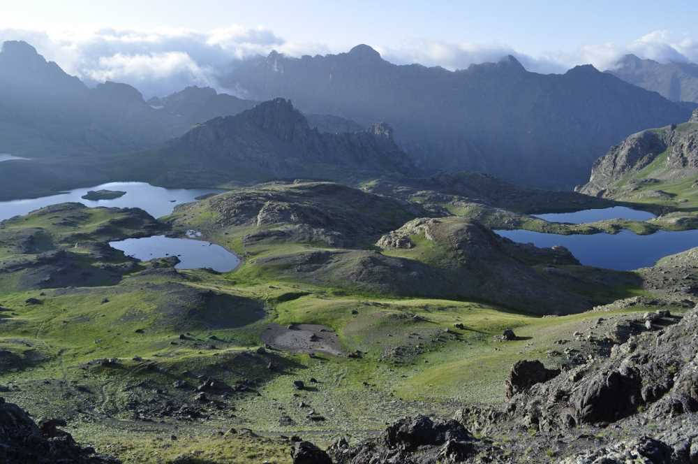

Yedigöller,Erzurum ilinin İspir ilçesi ve Rize ilinin İkizdere ilçesinde bulunan buzul gölleridir. Kaçkar Dağlarının güney batısında Verçenik Dağları üzerinde 3100 m yükseklikte bulunurlar. Erzurum-Rize sınırında Çayırözü alanında yer alır. İspir sınırlarında bazıları çok küçük 10 gölden oluşur. Ayrıca Yedigöller'in en batısındaki İkizdere sınırları içerisinde kalmaktadır. Çayırözü mahallesinden 21 km'lik stabilize yolun sonundan 1-2 saatlik yürüyüşle ulaşılmaktadır. Göl bölgesinin kuzeyinde Anzer ve Cimil yaylaları bulunur.İspir Belediyesi alana beton merdiven yaptırması tartışılmış,merdivenleri yıkan köylüler yargılanmıştır.Gölün suları Yedigöl Deresi aracılığıyla Çoruh Nehri'ne akmaktadır.
